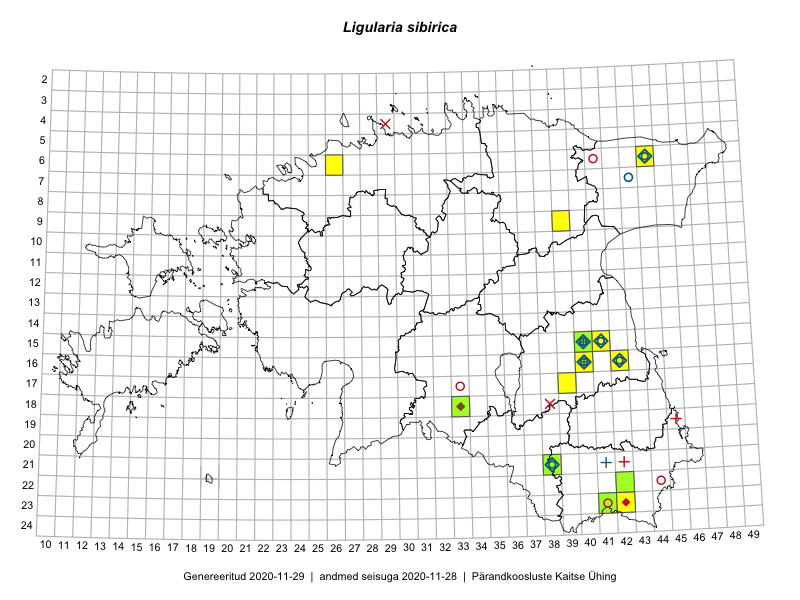

Ligularia sibirica
Uuendatud: 2016-12-01
Kaardile koondatud taksonid: Ligularia sibirica (L.) Cass.

Kaart põhineb 19 kirjel.
Viited andmebaasikirjetele
- Thea Kull: 2015-06-21: 15-41: ala
- Thea Kull: 2015-06-21: 15-41: GPS punkt
- Thea Kull: 2015-06-15: 15-40: ala
- Thea Kull: 2015-06-21: 15-40: GPS punkt
- Sander Laherand, Ott Luuk, Susanna Vain: 2016-06-15: 23-41: ala
- Ott Luuk, Eerik Leibak: 2016-08-09: 09-39: ala
- Kaire Lanno, Indrek Melts: 2016-08-21: 15-41: ala
- Kaire Lanno, Indrek Melts: 2016-08-21: 15-41: GPS punkt
- Kaire Lanno, Indrek Melts: 2016-08-21: 15-40: ala
- Kaire Lanno, Indrek Melts: 2016-08-21: : GPS punkt
- Kaire Lanno, Indrek Melts: 2016-08-24: 16-42: GPS punkt
- Ulvi Selgis: 2016-07-16: 06-26: GPS punkt
- Ott Luuk, Sander Laherand, Susanna Vain: 2016-06-15: 23-41: GPS punkt
- Ott Luuk, Sander Laherand, Susanna Vain: 2016-06-15: 23-41: GPS punkt
- Ott Luuk, Sander Laherand, Susanna Vain: 2016-06-15: 23-41: GPS punkt
- Ott Luuk, Sander Laherand, Susanna Vain: 2016-06-15: 23-41: GPS punkt
- Ott Luuk, Sander Laherand, Susanna Vain: 2016-06-15: 23-41: GPS punkt
- Ott Luuk, Sander Laherand, Susanna Vain: 2016-06-15: 23-41: GPS punkt
- Ott Luuk, Sander Laherand, Susanna Vain: 2016-06-15: 23-41: GPS punkt